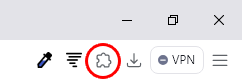
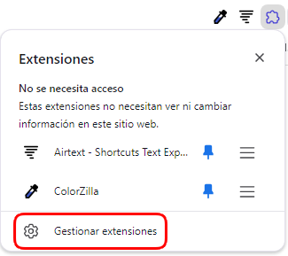
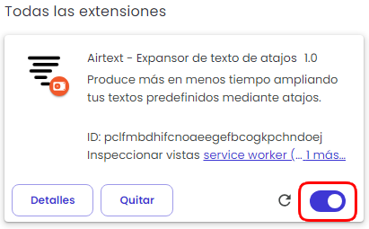

Después de registrar e insertar sus accesos directos, la extensión debería funcionar normalmente, tanto para escribir accesos directos como para el menú contextual. Si no funciona, primero asegúrese de haber iniciado sesión en la aplicación. Si ha iniciado sesión y todavía no funciona por algún motivo (lo cual no es normal), siga los pasos a continuación y lo solucionará.
1. En el navegador, en la parte superior derecha, haz clic en el ícono del rompecabezas:
2. Haga clic en "Gestionar extensiones":
3. Luego apaga y enciende la extensión:
Además, después de instalar la extensión, es necesario recargar las páginas que ya están abiertas para recibir la señal de la extensión.
Los atajos bien diseñados pueden aumentar la productividad y garantizar la coherencia, mientras que los atajos mal diseñados pueden provocar errores e ineficiencia. Esta guía lo ayudará a crear atajos que funcionen a la perfección, haciendo que su flujo de trabajo digital sea más rápido y sencillo.
Crear atajos útiles requiere algo de reflexión. A continuación se presentan algunos factores clave a considerar al diseñar atajos que se escriban rápidamente y eviten errores inesperados.
Aunque los atajos cortos son más rápidos de escribir, a veces pueden provocar expansiones accidentales. Por ejemplo, si configura "obg" para que se expanda a "Muchas gracias", escribir será rápido, pero podría usar accidentalmente "obg" en medio de una oración donde no deseaba la expansión.
Regla general: encuentre un equilibrio. Utilice atajos que sean lo suficientemente cortos para ser convenientes pero lo suficientemente únicos como para evitar activaciones accidentales. Si un atajo es demasiado corto, considere agregar una letra o carácter adicional para hacerlo más exclusivo (como "--grs" o "@grs" en lugar de "grs").
Terminar los atajos con un carácter especial, como un punto, una coma o una barra, es una excelente manera de evitar conflictos. Si su atajo es “addr-”, por ejemplo, es poco probable que escriba accidentalmente esa cadena en la escritura diaria, lo que la convierte en una opción segura. Agregar un carácter especial le indica al ampliador de texto que el acceso directo está completo, por lo que hay menos posibilidades de que reemplace el texto accidentalmente.
Ejemplo:
• Atajo incorrecto: "casa" para la dirección de su casa (se puede ampliar cada vez que escriba "casa" en una oración)
• Buen atajo: "casa//" ou "//casa"
Una vez que haya creado atajos efectivos, el siguiente desafío es recordarlos. A continuación se muestran algunas formas de realizar un seguimiento:
• Agrupar por categoría: Considere agrupar atajos por categoría y usar patrones similares. Por ejemplo, todos los atajos relacionados con el correo electrónico pueden terminar en "@" (como "trabajo@" para su correo electrónico del trabajo) y todos los atajos relacionados con direcciones pueden terminar con un guión ("casa-"). Alternativamente, use categorías de Airtext para organizar mejor sus accesos directos.
• Mantener la coherencia: Si tiene un estilo específico, como terminar siempre los atajos con un carácter especial, será más fácil recordar los atajos cuando sigan el mismo patrón.
• Practica regularmente: Practica escribir tus atajos para desarrollar la memoria muscular. Cuanto más los uses, más naturales se verán.
• Utilice el menú contextual: Airtext tiene un menú que se activa haciendo clic derecho en los campos de texto donde desea insertar el acceso directo. Simplemente seleccione la opción "Airtext" en este menú y se mostrarán todos sus accesos directos (incluidas las categorías) ordenados por título y el comando para el acceso directo en sí.
Crear atajos eficientes en un expansor de texto es una forma simple pero poderosa de ahorrar tiempo y acelerar la escritura. Al utilizar atajos el tiempo suficiente para evitar activaciones accidentales e iniciarlos o finalizarlos con un carácter especial, puede garantizar la precisión y evitar interrupciones en su trabajo. Con una configuración inicial y un uso constante, sus atajos se convertirán rápidamente en algo natural, lo que aumentará su productividad y facilitará su vida digital.
Para cualquier tipo de consulta sobre Airtext, puedes contactar con nosotros vía email landowskiapps@gmail.com.